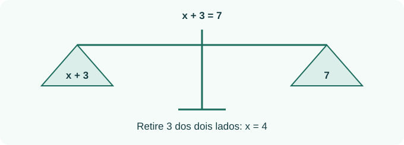
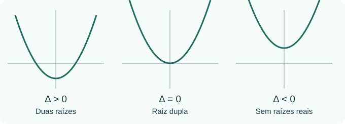
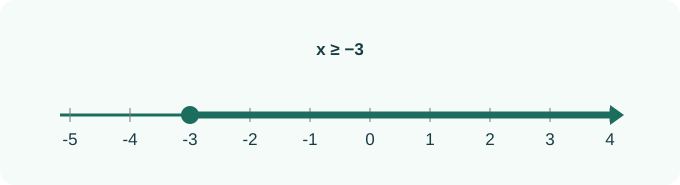

Simplifique −2(x − 5) + 3x.
Confira também o desenvolvimento no gabarito; respostas em formatos equivalentes podem exigir conferência manual.
🔽 Ver gabarito comentado
Resposta: x + 10
- −2x + 10 + 3x.
- x + 10.
Preparação para o Vestibulinho ETEC · Módulo 04. Estude os conceitos, acompanhe os exemplos linha por linha e faça a fixação antes de passar ao próximo tópico.
Letras representam números. Termos semelhantes têm a mesma parte literal e expoente. A distributiva multiplica cada termo dentro do parêntese, incluindo sinais.
Simplifique 3(x + 2) + 2x − 4.
Fixação 01 · autoral
Confira também o desenvolvimento no gabarito; respostas em formatos equivalentes podem exigir conferência manual.
Uma equação é uma igualdade com incógnita. Preserve a igualdade fazendo a mesma operação dos dois lados. Isole x. Na forma ax + b = 0, a deve ser não nulo.

Resolva 3(x − 2) = 2x + 8.
Fixação 02 · autoral
Confira também o desenvolvimento no gabarito; respostas em formatos equivalentes podem exigir conferência manual.
Use MMC dos denominadores para eliminar frações multiplicando TODOS os termos por ele. Em problemas, defina a incógnita, traduza a situação e confira se a resposta faz sentido.
Resolva x/3 + x/2 = 10.
Fixação 03 · autoral
Confira também o desenvolvimento no gabarito; respostas em formatos equivalentes podem exigir conferência manual.
Sistemas do primeiro grau relacionam duas incógnitas. Substituição: isole uma letra e substitua na outra equação. Adição: multiplique equações quando necessário para eliminar uma incógnita.
Um estacionamento tem 20 carros e motos e 56 rodas. Determine cada quantidade.
Fixação 04 · autoral
Confira também o desenvolvimento no gabarito; respostas em formatos equivalentes podem exigir conferência manual.
O maior expoente é 2. Na forma ax² + bx + c = 0, a ≠ 0. Se b = 0, isole x² e considere as duas raízes quando positivas. Se c = 0, coloque x em evidência.
Resolva 4x² − 16 = 0 e x² − 5x = 0.
Fixação 05 · autoral
Confira também o desenvolvimento no gabarito; respostas em formatos equivalentes podem exigir conferência manual.
Identifique a, b e c com seus sinais. Calcule delta. Se Δ > 0, duas raízes reais distintas; Δ = 0, uma raiz real dupla; Δ < 0, nenhuma raiz real. Use ± separadamente.

Resolva x² − 5x + 6 = 0.
Fixação 06 · autoral
Confira também o desenvolvimento no gabarito; respostas em formatos equivalentes podem exigir conferência manual.
As relações de Viète permitem calcular soma e produto sem encontrar individualmente as raízes. São úteis para descobrir coeficientes ou avaliar expressões envolvendo raízes.
Para 2x² − 14x + 9 = 0, calcule S, P e S/P.
Fixação 07 · autoral
Confira também o desenvolvimento no gabarito; respostas em formatos equivalentes podem exigir conferência manual.
Um parâmetro é uma letra que representa um coeficiente desconhecido. Se uma raiz é dada, substitua x por ela. Para raízes iguais use Δ = 0; distintas use Δ > 0. Se a contém parâmetro, exija a ≠ 0.
Encontre m para que x² − 4x − 2m = 0 tenha raízes reais distintas.
Fixação 08 · autoral
Confira também o desenvolvimento no gabarito; respostas em formatos equivalentes podem exigir conferência manual.
Uma inequação compara expressões usando <, >, ≤ ou ≥. Resolva como equação, mas inverta o sinal ao multiplicar ou dividir por número negativo. Extremo aberto exclui o valor, fechado inclui.

Resolva 3 − 2x ≤ 9.
Fixação 09 · autoral
Confira também o desenvolvimento no gabarito; respostas em formatos equivalentes podem exigir conferência manual.
Resolva as questões reais e complementares do módulo e confira cada etapa da resolução.
📚 Aulas particulares com Ágatha · Matemática / ETEC